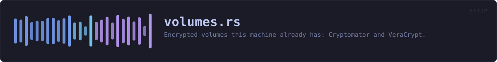

crates/veilvoice-setup/src/volumes.rs
veilvoice-setup · 580 lines · read the source here · or on GitHub
Encrypted volumes this machine already has: Cryptomator and VeraCrypt.
What this does, and the two things it deliberately does not
It reads. It finds whether either program is installed, and which of their volumes are mounted right now, so VeilVoice can offer to write veiled recordings into one instead of into a Downloads folder somebody meant to clear out.
It does not drive either program. No launching, no mounting, no unlocking, and it never sees a volume passphrase. Mounting somebody's encrypted volume is their act, taken in the tool they chose, and a voice de-identifier is not the program to be doing it for them. This is marker 39's rule about privilege in a second place: use what is already there, ask for nothing.
It does not decide whether a volume is hidden. VeraCrypt's hidden volumes exist so that somebody under compulsion can hand over one passphrase and reveal an outer volume, and the two are indistinguishable from outside by design. No amount of looking will tell them apart, so Hidden has an Unknown state and it is the caller's job to ask rather than to guess. See Hidden for why guessing wrong destroys data.
By the time VeilVoice sees one, it is a directory
That is what makes this honest and small. A mounted Cryptomator vault and a mounted VeraCrypt volume are both ordinary directories to anything that writes a file. The encryption is entirely the other tool's, VeilVoice adds none of its own here, and calling any of this "VeilVoice encryption" would be the overclaim this project refuses.
What it is worth, which is less than it sounds
A vault protects the file inside it. It does not protect the temporary file an operating system wrote while the file was being produced, the swap or hibernation image the kernel wrote, the thumbnail a file manager made, or the recently-opened list a desktop keeps. Full-volume encryption is what covers those. DISK_ADVICE is that sentence, single-sourced so the command line and the window cannot drift into two different promises.
In plain words
Notices whether you already have Cryptomator or VeraCrypt, and which of their encrypted folders are open right now, so VeilVoice can offer to save into one.
It never opens or closes them for you and never asks for their password. It also cannot tell whether a VeraCrypt volume is the hidden one, because nothing can, which is why VeilVoice asks you instead of assuming.
WHAT THIS FILE CONTAINS
580 lines defining 18 functions (13 public), 3 types and 2 constants. Everything below is read out of the source, so it cannot disagree with the code.
The types it owns.
enum Toolline 68 · One of the two tools this module knows about.enum Hiddenline 131 · Whether a destination is, or might be, a VeraCrypt hidden volume.struct Volumeline 173 · A mounted volume VeilVoice could write into.
What happens when it runs. These are the ways in: public, and nothing else in this file calls them, so they are what an outside caller reaches first.
Tool::nameline 80 · The name to print.Tool::keyline 88 · A stable identifier, for a settings file.Tool::from_keyline 96 · The tool with this key, if it is one.Tool::home_pageline 101 · Where to read about it, for a user who has neither installed.Hidden::safe_to_writeline 152 · Whether VeilVoice may write here.Hidden::refusalline 157 · Why writing is refused, in the words a user reads.Volume::readyline 198 · Whether VeilVoice may write here right now.Volume::blockedline 206 · Why it is not ready, if it is not.installedline 219 · Whether tool looks installed on this machine.
reachescandidates,on_pathmountedline 283 · Every mounted volume either tool is currently offering.
reachesfrom_mount_directories,from_proc_mounts,found,recognise,unescape_mountcoversline 316 · Whether path is inside one of mounts right now.
WHAT CALLS WHAT
The functions this file defines, and the calls between them. An edge means the callee's name appears, called, inside the caller's body. This is a syntactic reading, not a type-resolved one.
The same graph as Mermaid source
%%{init: {"theme":"base","themeVariables":{"background":"#1a1b26","primaryColor":"#1f2335","primaryTextColor":"#c0caf5","primaryBorderColor":"#7aa2f7","secondaryColor":"#16161e","tertiaryColor":"#16161e","lineColor":"#737aa2","textColor":"#c0caf5","mainBkg":"#1f2335","nodeBorder":"#7aa2f7","clusterBkg":"#16161e","clusterBorder":"#2f3549","fontFamily":"ui-monospace, SFMono-Regular, Consolas, monospace","fontSize":"14px"}}}%%
flowchart TD
n_name(["Tool::name<br/>line 80"])
n_key(["Tool::key<br/>line 88"])
n_from_key(["Tool::from_key<br/>line 96"])
n_home_page(["Tool::home_page<br/>line 101"])
n_safe_to_write(["Hidden::safe_to_write<br/>line 152"])
n_refusal(["Hidden::refusal<br/>line 157"])
n_found["Volume::found<br/>line 184"]
n_ready(["Volume::ready<br/>line 198"])
n_blocked(["Volume::blocked<br/>line 206"])
n_installed(["installed<br/>line 219"])
n_candidates["candidates<br/>line 235"]
n_on_path["on_path<br/>line 263"]
n_mounted(["mounted<br/>line 283"])
n_covers(["covers<br/>line 316"])
n_from_proc_mounts["from_proc_mounts<br/>line 326"]
n_recognise["recognise<br/>line 351"]
n_unescape_mount["unescape_mount<br/>line 368"]
n_from_mount_directories["from_mount_directories<br/>line 393"]
n_from_mount_directories --> n_found
n_from_proc_mounts --> n_found
n_from_proc_mounts --> n_recognise
n_from_proc_mounts --> n_unescape_mount
n_installed --> n_candidates
n_installed --> n_on_path
n_mounted --> n_from_mount_directories
n_mounted --> n_from_proc_mounts
click n_name href "https://github.com/tilas01/veilvoice/blob/main/crates/veilvoice-setup/src/volumes.rs#L80" "open the source"
click n_key href "https://github.com/tilas01/veilvoice/blob/main/crates/veilvoice-setup/src/volumes.rs#L88" "open the source"
click n_from_key href "https://github.com/tilas01/veilvoice/blob/main/crates/veilvoice-setup/src/volumes.rs#L96" "open the source"
click n_home_page href "https://github.com/tilas01/veilvoice/blob/main/crates/veilvoice-setup/src/volumes.rs#L101" "open the source"
click n_safe_to_write href "https://github.com/tilas01/veilvoice/blob/main/crates/veilvoice-setup/src/volumes.rs#L152" "open the source"
click n_refusal href "https://github.com/tilas01/veilvoice/blob/main/crates/veilvoice-setup/src/volumes.rs#L157" "open the source"
click n_found href "https://github.com/tilas01/veilvoice/blob/main/crates/veilvoice-setup/src/volumes.rs#L184" "open the source"
click n_ready href "https://github.com/tilas01/veilvoice/blob/main/crates/veilvoice-setup/src/volumes.rs#L198" "open the source"
click n_blocked href "https://github.com/tilas01/veilvoice/blob/main/crates/veilvoice-setup/src/volumes.rs#L206" "open the source"
click n_installed href "https://github.com/tilas01/veilvoice/blob/main/crates/veilvoice-setup/src/volumes.rs#L219" "open the source"
click n_candidates href "https://github.com/tilas01/veilvoice/blob/main/crates/veilvoice-setup/src/volumes.rs#L235" "open the source"
click n_on_path href "https://github.com/tilas01/veilvoice/blob/main/crates/veilvoice-setup/src/volumes.rs#L263" "open the source"
click n_mounted href "https://github.com/tilas01/veilvoice/blob/main/crates/veilvoice-setup/src/volumes.rs#L283" "open the source"
click n_covers href "https://github.com/tilas01/veilvoice/blob/main/crates/veilvoice-setup/src/volumes.rs#L316" "open the source"
click n_from_proc_mounts href "https://github.com/tilas01/veilvoice/blob/main/crates/veilvoice-setup/src/volumes.rs#L326" "open the source"
click n_recognise href "https://github.com/tilas01/veilvoice/blob/main/crates/veilvoice-setup/src/volumes.rs#L351" "open the source"
click n_unescape_mount href "https://github.com/tilas01/veilvoice/blob/main/crates/veilvoice-setup/src/volumes.rs#L368" "open the source"
click n_from_mount_directories href "https://github.com/tilas01/veilvoice/blob/main/crates/veilvoice-setup/src/volumes.rs#L393" "open the source"
classDef entry fill:#1f2335,stroke:#7aa2f7,color:#c0caf5
class n_name,n_key,n_from_key,n_home_page,n_safe_to_write,n_refusal,n_ready,n_blocked,n_installed,n_mounted,n_covers entry
classDef api fill:#1f2335,stroke:#7dcfff,color:#c0caf5
class n_found,n_from_proc_mounts api
classDef helper fill:#1f2335,stroke:#bb9af7,color:#c0caf5
class n_candidates,n_on_path,n_recognise,n_unescape_mount,n_from_mount_directories helperThis site loads no third-party script, so it cannot run Mermaid; the diagram above is the same nodes and edges drawn by the generator instead. GitHub renders the source below directly.
ITEMS
| Item | Line | Documentation |
|---|---|---|
DISK_ADVICE pub const | 59 | What VeilVoice tells the user about the disk under the volume. |
Tool pub enum | 68 | One of the two tools this module knows about. |
Tool::ALL pub const | 77 | Every tool, in the order a user interface should offer them. |
Tool::name pub fn | 80 | The name to print. |
Tool::key pub fn | 88 | A stable identifier, for a settings file. |
Tool::from_key pub fn | 96 | The tool with this key, if it is one. |
Tool::home_page pub fn | 101 | Where to read about it, for a user who has neither installed. |
Hidden pub enum | 131 | Whether a destination is, or might be, a VeraCrypt hidden volume. |
Hidden::safe_to_write pub fn | 152 | Whether VeilVoice may write here. |
Hidden::refusal pub fn | 157 | Why writing is refused, in the words a user reads. |
Volume pub struct | 173 | A mounted volume VeilVoice could write into. |
Volume::found pub fn | 184 | A volume found by probing, with its hidden state not yet asked. |
Volume::ready pub fn | 198 | Whether VeilVoice may write here right now. |
Volume::blocked pub fn | 206 | Why it is not ready, if it is not. |
installed pub fn | 219 | Whether tool looks installed on this machine. |
candidates fn | 235 | Where each tool installs itself, per platform. |
on_path fn | 263 | The tool's command on PATH, if it is there under its usual name. |
mounted pub fn | 283 | Every mounted volume either tool is currently offering. |
covers pub fn | 316 | Whether path is inside one of mounts right now. |
from_proc_mounts pub fn | 326 | Parse a Linux mount table into the volumes we recognise. |
recognise fn | 351 | Which tool a mount belongs to, judged by where it is mounted and what mounted it. |
unescape_mount fn | 368 | Undo the octal escaping /proc/mounts applies to a path. |
from_mount_directories fn | 393 | Volumes found by looking in the directories each platform mounts into. |